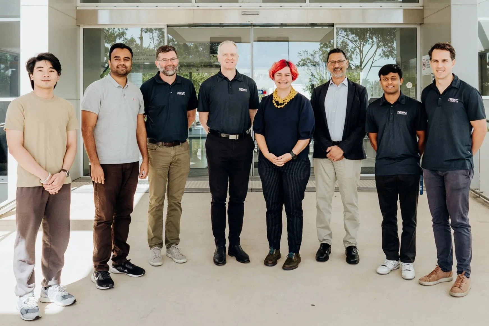

DEWC Services and Adelaide University Collaborate on AI-Enabled Decision-Support Research
Featured in Australian Defence Magazine (ADM): DEWC Services and Adelaide University have partnered with Defence Trailblazer on cutting-edge research to advance sovereign, open-architecture AI-enabled decision-support capabilities for Australia’s Defence sector in high-tempo, contested environments.
 Research team collaboration at Adelaide University
Research team collaboration at Adelaide University

DEWC Services & Academic Investigators at Innovation House